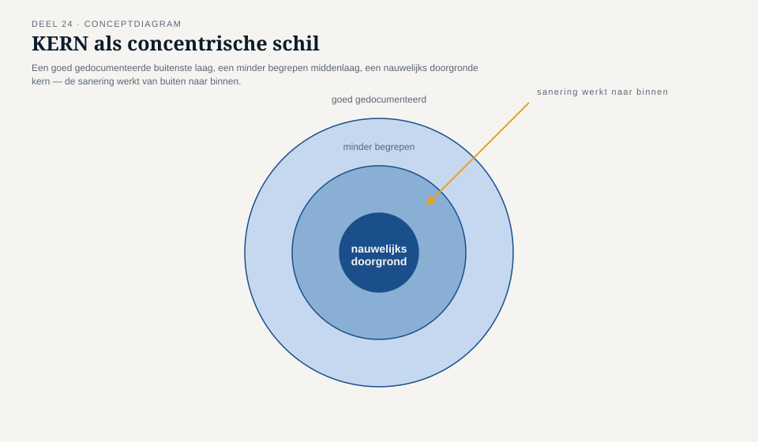
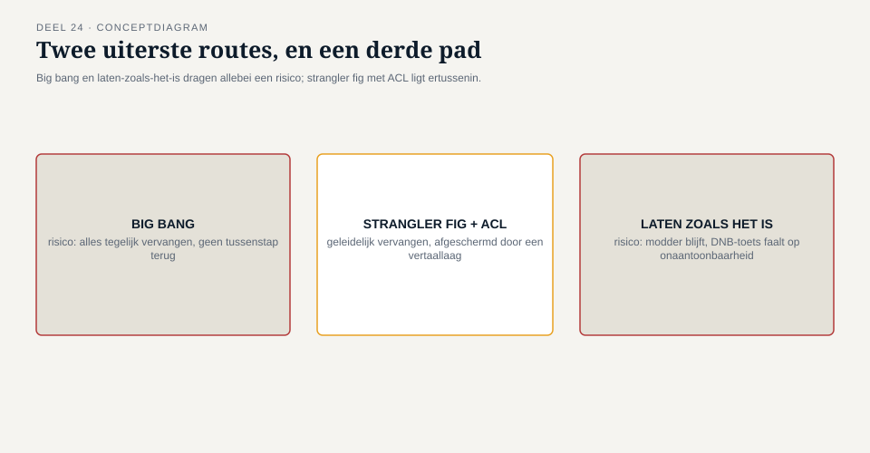
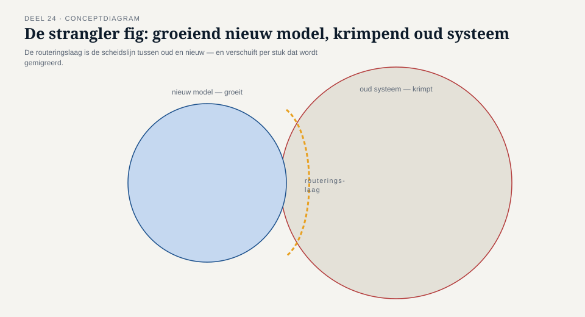
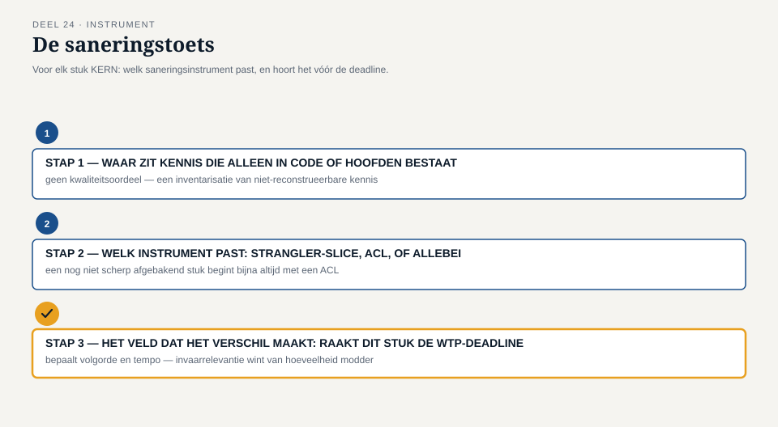

Deel 24 — Grote ballen modder saneren: strangler fig en anti-corruption layer als saneringsstrategie
Reader · Ductus-cursus Domain-Driven Design · niveau 3 (expert) · deel 24 van 30
24.1 Waar dit deel over gaat
Deel 23 sloot af met een herijkte kerndomeinuitspraak die op het eerste gezicht een bijzin leek, maar het zwaartepunt van dit deel draagt: náást het Mutatieplatform wordt de historische datakwaliteit van KERN, voor de duur van de Stelselovergang, een tweede, tijdelijk kerndomein. Die uitspraak verplicht het team tot iets dat het jarenlang heeft uitgesteld — niet omdat niemand het zag, maar omdat er nooit een dwingende reden was om er nu mee te beginnen. KERN is, in de woorden die in niveau 2 al vielen en die Vera Almeida in dit deel opnieuw scherp stelt, een grote bal modder: een systeem waarvan de kennis grotendeels in code en in hoofden zit, niet in een expliciet, getoetst model.
Dit deel behandelt hoe je zo’n systeem saneert zonder het stil te leggen en zonder een herbouw-van-de-grond-af te beloven die de Wtp-deadline nooit zou toestaan. Twee instrumenten dragen dat werk: de strangler fig — een saneringsstrategie waarbij je een nieuw, schoon model geleidelijk om het oude heen bouwt totdat het oude overbodig is, in plaats van het in één keer te vervangen — en de anti-corruption layer (ACL) — een vertaallaag die een schoon model beschermt tegen de begrippen, aannames en uitzonderingen van een systeem dat je (nog) niet kunt of wilt herschrijven.
Aan het eind van dit deel kun je:
- uitleggen wat een grote bal modder is als architecturaal fenomeen, en waarom die vooral ontstaat door afwezigheid van expliciete grenzen, niet door onbekwaamheid;
- het verschil tussen een strangler fig-aanpak en een big-bang-herbouw benoemen, met de voorwaarden waaronder elk verantwoord is;
- een anti-corruption layer ontwerpen die een nieuw model beschermt zonder het oude systeem te hoeven begrijpen tot in elk detail;
- met de saneringstoets bepalen welk deel van een grote bal modder je eerst aanpakt, en welk instrument (strangler-slice, ACL, of allebei) daarbij past.
24.2 De casus: Vera’s aanbod
Uit het casusdossier: Vera Almeida is architect van KERN sinds de tweede mislukte moderniseringspoging. Ze kent het systeem beter dan wie ook in het team, en beter dan iedereen weet ze ook wat ze er niet van weet.
Vier dagen na de sessie uit deel 23 vraagt Vera een half uur met Daan en Foppe. Geen agendapunt, geen dossierstuk — ze wil praten voordat ze iets op papier zet. “Jullie hebben KERN nu formeel tot kerndomein voor datakwaliteit gemaakt. Voordat we daar een implementatieplan-hoofdstuk over schrijven, moet ik jullie iets vertellen dat ik in niveau 2 nooit hardop heb gezegd, omdat het toen niet hoefde: ik ken de nieuwste helft van KERN goed. De oudste helft — de kern van de kern, de eerste module die ooit is gebouwd, van vóór mijn tijd — ken ik alleen van de uitzonderingen die ik erin ben tegengekomen als ze fout gingen. Niemand bij Meridiaan kent die module meer volledig.”
Foppe stelt de vraag die hij in niveau 2 al vaker stelde: “Is dat een probleem van kennis, of een probleem van model?” Vera antwoordt zonder aarzelen: “Allebei, en ze zijn hetzelfde probleem. Er is nooit een expliciet model geweest om tegen te toetsen. Er is alleen code, dertig jaar patches, en een handvol mensen die inmiddels met pensioen zijn.”
Daan herkent het patroon meteen — het is precies de beschrijving die de kerndomeinclassificatie in niveau 2 aan KERN gaf, maar die toen geen actie vroeg omdat KERN “gewoon werkte.” Nu moet het team, binnen negen maanden, kunnen aantonen dat elk historisch dossier in die oudste module correct genoeg is om in te varen. “We kunnen niet wachten tot we het hele systeem begrijpen,” zegt Vera. “En we kunnen het niet in één keer herbouwen — daar is geen tijd voor, en het risico van een big bang op een systeem dat niemand volledig kent, is groter dan het risico van laten zoals het is. Ik wil jullie voorstellen hoe we het wél doen.”

24.3 De grote bal modder, feitelijk
De term “grote bal modder” (big ball of mud) beschrijft een systeem zonder herkenbare architecturale structuur: geen grenzen tussen onderdelen, veel onverwachte afhankelijkheden, en een ontwerp dat — voor zover het er ooit was — is dichtgeslibd door decennia van gerichte, lokaal zinnige aanpassingen die nooit tegen een geheel zijn getoetst. Het ontstaat zelden door onkunde. Het ontstaat doordat elke individuele wijziging, op het moment dat hij werd gemaakt, de snelste en goedkoopste oplossing was — en doordat niemand ooit de opdracht kreeg (of nam) om de optelsom van al die wijzigingen tegen een expliciet model te toetsen. KERN is daar een schoolvoorbeeld van: geen enkele patch was op zichzelf onverantwoord, en de som ervan is een systeem dat niemand meer volledig doorziet.
Twee reacties op een grote bal modder zijn allebei verleidelijk en allebei riskant onder tijdsdruk:
De big-bang-herbouw. Alles tegelijk vervangen door een nieuw, schoon systeem, gebouwd op het model dat je nú zou kiezen. Aantrekkelijk omdat het een duidelijk eindpunt belooft — en riskant om precies dezelfde reden: tot het moment van omschakelen draai je twee systemen naast elkaar zonder dat er ergens onderweg waarde wordt opgeleverd, en het omschakelmoment zelf draagt het volledige risico van een systeem dat niemand volledig kent, in één keer getest onder productie-omstandigheden. Bij een deadline als 1 januari 2028 is dat risico niet te verantwoorden: een big bang die faalt, faalt op het slechtst denkbare moment.
Laten zoals het is, tot het niet meer kan. De omgekeerde reactie — vaak niet uitgesproken als besluit, maar het gedragspatroon van een team dat de sanering telkens net iets belangrijker vindt om uit te stellen dan om te beginnen. Dat werkt tot het moment waarop een externe eis (hier: het implementatieplan, DNB) een aantoonbaarheid vraagt die het systeem in zijn huidige vorm niet kan leveren. Op dat moment is uitstel geen optie meer, en is de tijd die eerst beschikbaar was, verdampt.
De strangler fig en de anti-corruption layer zijn geen compromis tussen deze twee — ze zijn een derde route die het risico van de big bang vermijdt zonder het uitstel van uitstellen te herhalen.

24.4 Strangler fig: geleidelijk overnemen, niet in één keer vervangen
De strangler fig ontleent haar naam aan een plant die om een gastheerboom heen groeit, hem geleidelijk overneemt, en uiteindelijk zelfstandig blijft staan nadat de gastheer is afgestorven en weggerot. Als saneringsstrategie betekent dat: je bouwt geen nieuw systeem naast het oude om het in één keer te vervangen, maar je bouwt een nieuw, schoon model voor één afgebakend stuk functionaliteit tegelijk, routeert het verkeer voor dát stuk naar het nieuwe model, en laat de rest voorlopig via het oude systeem lopen. Stuk voor stuk krimpt het oude systeem, totdat er niets meer overblijft dat het nog hoeft te doen.
Drie elementen maken de aanpak werkbaar, niet toevallig dezelfde drie die bij KERN spelen:
Een routeringslaag. Iets dat bepaalt, per aanroep of per soort mutatie, of die naar het oude of het nieuwe deel moet — zonder dat de rest van het landschap hoeft te weten welk deel op dat moment de vraag beantwoordt. Zonder zo’n laag is er geen strangler fig, alleen twee systemen die toevallig naast elkaar bestaan.
Afgebakende, onafhankelijk te migreren stukken. De strangler fig werkt alleen als je het geheel in stukken kunt knippen die één voor één te vervangen zijn zonder de andere stukken te breken — precies wat een grote bal modder per definitie lastig maakt, omdat de grenzen tussen “stukken” nooit expliciet zijn getrokken. Het eerste werk van een strangler-fig-sanering is dus vaak niet het bouwen van iets nieuws, maar het zichtbaar maken van een grens die er impliciet al was.
Volgorde op basis van risico en waarde, niet op basis van wat toevallig makkelijk is. Het verleidelijkste startpunt is het stuk dat het minst risicovol is om te migreren — maar dat is niet automatisch het stuk dat het meest oplevert. Bij KERN is het startpunt niet “het makkelijkste,” maar het stuk waarvan de datakwaliteit het meest bepalend is voor het implementatieplan.
Het eindpunt van een strangler fig is, net als bij de plant waarnaar ze is vernoemd, geen tussenstadium: op een gegeven moment doet het oude systeem niets meer, en kan het worden afgeschaft — niet vervangen in één sprong, maar leeggehaald tot er niets meer over is om te vervangen.

24.5 Anti-corruption layer: het nieuwe model beschermen tegen het oude
Waar de strangler fig over tempo en volgorde gaat — wélk stuk wanneer overnemen — gaat de anti-corruption layer over grenzen tijdens de overgang: hoe voorkom je dat het nieuwe, schone model dat je per stuk bouwt, alsnog wordt vervuild door de begrippen, uitzonderingen en technische compromissen van het oude systeem, zolang beide naast elkaar bestaan?
Een ACL is een vertaallaag die tussen het nieuwe model en het oude systeem in staat. Alles wat het oude systeem naar buiten geeft — velden met een dubbele betekenis, statussen die ooit één ding betekenden en nu drie, uitzonderingen die alleen kloppen als je de geschiedenis van een specifieke patch kent — wordt in de ACL vertaald naar het nieuwe model, en nooit rechtstreeks doorgegeven. Het nieuwe model hoeft daardoor niet elke uitzondering van het oude systeem te kennen om er correct mee samen te werken; het hoeft alleen de vertaling te vertrouwen.
Dat onderscheidt de ACL van een gewone technische integratielaag: een ACL bewaakt niet alleen het gegevensformaat, maar het begrippenkader. Het beschermt de ubiquitous language van het nieuwe model tegen besmetting door de taal van het oude — precies het patroon dat in niveau 2 (deel 14) al werd geïntroduceerd als context-mappingpatroon, hier toegepast op een grens binnén één systeem in plaats van tussen twee systemen. Bij KERN betekent dat concreet: de oudste module gebruikt bijvoorbeeld één statusveld voor drie verschillende, historisch gegroeide betekenissen van “actief.” De ACL kent die drie betekenissen, en vertaalt ze naar drie expliciete, benoemde toestanden in het nieuwe model — zodat niemand die met het nieuwe model werkt, de geschiedenis van dat ene statusveld hoeft te kennen.
De ACL is typisch tijdelijk voor precies het stuk waarvoor hij is gebouwd — zodra dat stuk via de strangler fig volledig is gemigreerd, vervalt de noodzaak van de vertaling voor dát stuk, en kan de ACL daar worden opgeruimd. Voor stukken die nog niet zijn gemigreerd, blijft hij nodig zo lang het oude systeem nog bestaat.

24.6 De saneringstoets
De saneringstoets is het instrument van dit deel: een gestructureerde manier om te bepalen welk deel van een grote bal modder je eerst aanpakt, en of dat met een strangler-slice, een ACL, of allebei moet. Drie stappen, toegepast per herkenbaar stuk functionaliteit.
Stap 1 — Waar zit kennis die alleen in code of in hoofden bestaat?
Breng in kaart welke stukken van het systeem geen expliciet, gedeeld model hebben — waar de enige bron van waarheid de code zelf is, of de herinnering van iemand die er lang genoeg mee heeft gewerkt. Dit is geen oordeel over de kwaliteit van die code; het is een inventarisatie van waar de kennis zit die je, bij vertrek van die persoon of bij een externe toets zoals DNB, niet meer zou kunnen reconstrueren.
Stap 2 — Welk instrument past: strangler-slice, ACL, of allebei?
Voor elk stuk uit stap 1: kan dit stuk, als eigen, afgebakend geheel, geleidelijk vervangen worden door een nieuw model (strangler-slice), of moet het voorlopig blijven bestaan terwijl je het nieuwe model ervoor afschermt (ACL), of allebei — een ACL nu, als eerste stap naar een strangler-slice later? Een stuk dat nog niet scherp genoeg is afgebakend om in één keer te migreren, begint bijna altijd met een ACL: die dwingt je de begrippen expliciet te maken, wat op zichzelf al de voorbereiding is voor de latere migratie.
Stap 3 — Het veld dat het verschil maakt: raakt dit stuk de Wtp-deadline, of niet?
Niet elk stuk van KERN hoeft vóór 1 januari 2028 gesaneerd te zijn. Het stuk dat beslist over volgorde en tempo, is niet “hoe erg is de modder hier,” maar: is dít stuk aantoonbaar van invloed op de datakwaliteit van het invaren, of niet? Een stuk met veel modder maar zonder invaarrelevantie kan wachten tot ná de transitie. Een stuk met minder modder maar met directe invaarrelevantie gaat voor. Dit is het veld dat de saneringstoets onderscheidt van een generieke technical-debt-inventarisatie: het is geen lijst van wat er slecht aan het systeem is, maar een geordende route van wat er, gegeven de deadline, eerst moet.

24.7 Terug naar de casus
Vera, Daan en het team — met Karsten en Otto als klankbord, Foppe als begeleider — doorlopen de saneringstoets op de oudste module van KERN.
Bij stap 1 blijkt de kennis-inventarisatie groter dan verwacht: niet één, maar vier stukken functionaliteit blijken vrijwel uitsluitend in code te bestaan, waaronder de statuslogica die “actief” op drie manieren gebruikt en een verouderde regel voor het herberekenen van historische premiegrondslagen die niemand meer volledig kan uitleggen zonder in de code te duiken.
Bij stap 2 stelt Vera voor om te beginnen met een ACL rond de statuslogica — niet omdat dat het risicovolste stuk is, maar omdat het de kortste weg is naar een expliciet model dat de rest van het team kan toetsen. “Zodra we die drie betekenissen van ‘actief’ benoemd hebben, kunnen we ze pas goed beoordelen op datakwaliteit. Nu kunnen we dat niet, want we weten niet eens zeker wélke betekenis in welk dossier zit.” Otto, die liever meteen door zou migreren, erkent na enig verzet het punt: “Ik wilde beginnen met bouwen. Maar we kunnen niet bouwen wat we niet kunnen benoemen.”
Bij stap 3 wordt de statuslogica en de premiegrondslagregel als eerste geprioriteerd — beide raken rechtstreeks de datakwaliteitseis van het implementatieplan. Twee andere stukken, waaronder een verouderde rapportagefunctie zonder invaarrelevantie, gaan op een lijst voor ná 1 januari 2028.
Aan het eind van de sessie brengt Karsten, zoals gewend, de vraag naar kosten en risico in: “Als de ACL rond de statuslogica een fout bevat, waar zien we dat dan het eerst?” Vera’s antwoord opent de deur naar wat het team pas ten volle in deel 25 zal doorgronden: “Dat weten we pas zeker als we ook weten wat er gebeurt met de gegevens die tussen KERN en de rest van het landschap heen en weer bewegen zolang deze sanering loopt. Dat is niet meer alleen een vraag over KERN — dat is een vraag over wat ‘consistent’ nog betekent als niet alles meer op hetzelfde moment hetzelfde weet.”
Vera meldt aan het eind van de sessie, terzijde, dat ze die ochtend een informeel verzoek kreeg om “ergens deze maand” een uur beschikbaar te zijn voor een gesprek met het bestuur “over een mogelijke uitbreiding van de scope.” Niemand in de kamer vraagt door — de sessie loopt al uit — maar Daan noteert het, zonder er op dat moment iets van te maken.
24.8 Vooruitblik
Dit deel heeft laten zien hoe je een systeem zonder expliciet model saneert zonder het stil te leggen: stuk voor stuk, met de strangler fig als route en de anti-corruption layer als bescherming tijdens de overgang. Deel 25 volgt rechtstreeks op Vera’s slotopmerking: zodra een systeem in stukken wordt opgeknipt — door sanering, of door een landschap dat al uit meerdere bounded contexts bestaat — verdwijnt de garantie dat alles op elk moment hetzelfde weet. Wat daarvoor in de plaats komt, en wat dat concreet betekent voor de invaaroperatie zelf, is het onderwerp van het volgende deel.